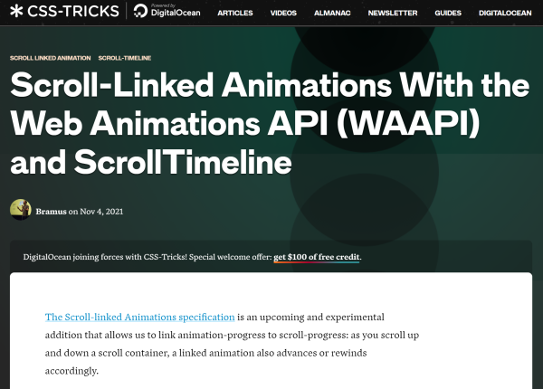
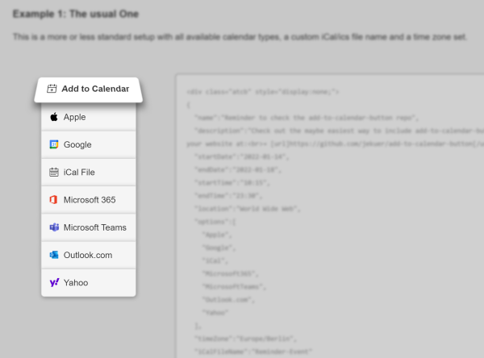
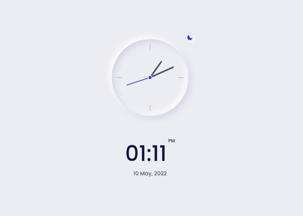
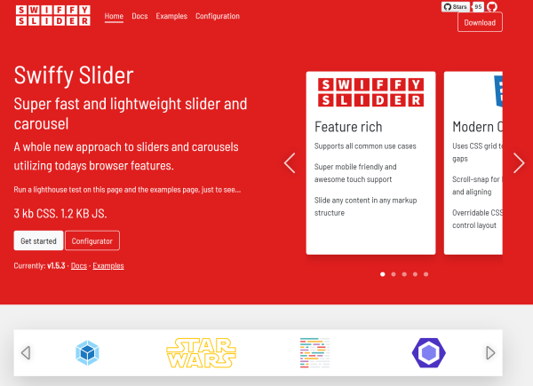
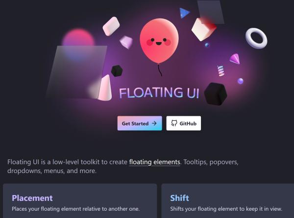
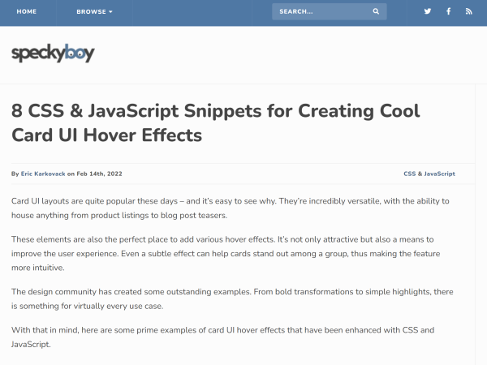
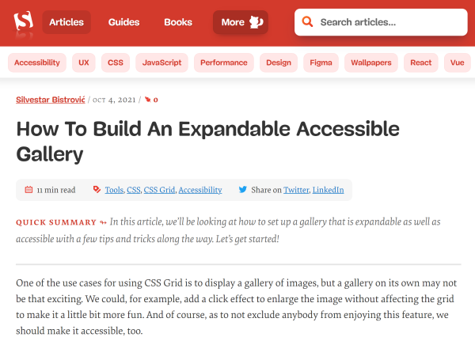
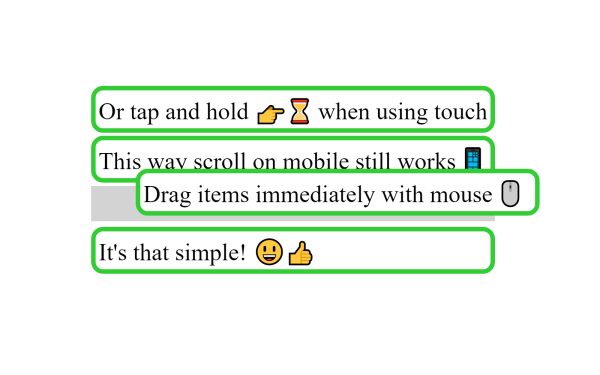
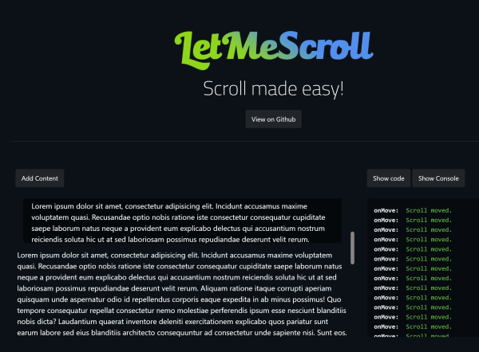

This months Discoveries it’s all about Web UI driven by JavaScript. I have found some really cool components in the net you can use in your project right away to give your users a bit more food for the eye. Congrats to the developers for their amazing work.
- Scroll-Linked Animations With the Web Animations API (WAAPI) and ScrollTimeline
- Slider Scroll
- Add-to-Calendar Button
- Responsive Clock Ui
- Swiffy Slider
- Floating UI
- 8 CSS & JavaScript Snippets for Creating Cool Card UI Hover Effects
- How To Build An Expandable Accessible Gallery
- Omicron drag&drop
- LetMeScroll
Scroll-Linked Animations With the Web Animations API (WAAPI) and ScrollTimeline
by Bramus Van Dammehttps://css-tricks.com/scroll-linked-animations-with-the-web-animations-api-waapi-and-scrolltimeline/
Bramus shows us how to implement a reading progress bar with the new ScrollTimeline feature coming up within the next versions of Chrome and other browsers, including a polyfill from Robert Flack. As you read this … look at the orange bar at the top.
Slider Scroll
by Edixon Piñahttps://sliderscroll.netlify.app/
Ever wanted to create a web application consisting of individual slides? Then, this is for you. Edixon has to (nearly) perfect and clean solution for this on GitHub.
Add-to-Calendar Button
by Jens Kuerschnerhttps://github.com/jekuer/add-to-calendar-button
Jens offers a nice solution for everybody who wants their users to add an events to their calendar within two clicks. It is based on inline JSON-snippets and has several features like dynmamic days, timezone offsets, schema.org support and not to forget, a pleasing UI.
Responsive Clock Ui
by Bedimcodehttps://github.com/bedimcode/responsive-clock-ui
Marlon, a web designer from Peru, who is known on the web as Bedimcode, has created a stunning CSS- and JS-driven analog clock, with a light and a dark theme. Maybe a bit useless for a website, but wonderfully crafted and nice to look at. You can find a demo here.
Swiffy Slider
by DynamicWebhttps://swiffyslider.com/
Sliders and carousels are almost everywhere and there are many implementations out there, but this one from the team of DynamicWeb is a bit outstanding because of its features and application possibilities. Well done … espacially the well documentation. No questions left.
Floating UI
by Unknownhttps://floating-ui.com/
Whoever has created this solution, is hardly anything to add to their claim: “Floating UI is a low-level toolkit to create floating elements. Tooltips, popovers, dropdowns, menus, and more.”. and it is hardly anything to add to their feature list. Whenever something needs to float … use this library.
8 CSS & JavaScript Snippets for Creating Cool Card UI Hover Effects
by Eric Karkovackhttps://speckyboy.com/css-javascript-card-ui-hover-effects/
Cards are a good way to bring order in a UI. How to make such cards exciting shows Eric with his collection of stunning card designs. Personally I’m in love with the ‘Profile Card Hover Effect’…
How To Build An Expandable Accessible Gallery
by Silvestar Bistrovićhttps://www.smashingmagazine.com/2021/10/build-expandable-accessible-gallery/
Photo in galleries or other grid based collections should have the possibility to expand an item in order to see either the full photo or some details of the selected item. To avoid calling a detail page or something similar, Silvestar has developed a method to display this animated in fullscreen mode. Can’t wait to find a problem to check this out.
Omicron drag&drop
by Franek Boehlkehttps://github.com/mcFrax/omicron-dnd
What sounds like a variant of the Corona virus is a fast JavaScript drag-and-drop library for desktop and mobile browsers, made by Franek Boehlke. And this is no coincidence, but rather a pandemic project. It is lean, but has all basic features to nudge things around on your web app.
LetMeScroll
by Bruno Vieirahttps://bmsvieira.github.io/letmescroll.js/demo/index.html
Quite a while ago a have implemented a custom scrollbar on my own in a Web App and it wasn’t so funny as I thought. Lot of things to care about. If Bruno had already finished his project at that time, I could have saved myself the work. He brings a native scroll behaviour for desktop and mobile, easy customization and multiple callbacks in 465 lines of vanilla JS code. Great job, Bruno.



Comments